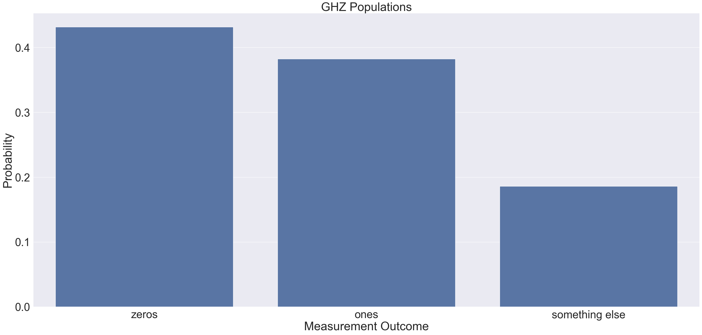
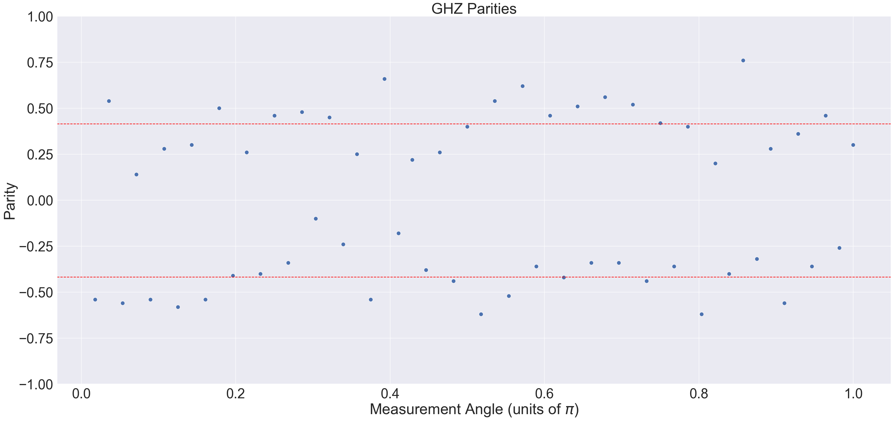

GHZ State Fidelity¶
This knowledge articles details the generation of the Greenberger–Horne–Zeilinger (GHZ) on the H2-1 device, with the use of the H2-1 syntax checker to verify the correctness of the job. Producing GHZ states is a demanding test of qubit coherence, as they are maximally sensitive probes of global dephasing. Measuring the GHZ state fidelity is a useful test for measuring the quality and performance of the H2-1 device. The logarithmic-depth GHZ state preparation protocol [arxiv.2305.03828] is used. At 56 qubits, full statevector simulation is classically intractable. This signals the need to develop more specialized compute tools for simulations. Stabilizer simulation is one alternative, but this constrains the jobs to only utilize the Clifford gate set.
The technical specifications for the System Model H2 devices are available here.
GHZ State Fidelity¶
The \(N\)-qubit GHZ state preparation, using the definition,
where \(N=56\). A logarithmic-depth circuit is used [arxiv.1807.05572], an improvement over the standard GHZ circuit construction.
import numpy as np
from pytket.circuit import Circuit
def logarithmic_ghz_circuit(n_qubits):
n = n_qubits
circ = Circuit(n, n)
# construct GHZ prep circuit, optimized for parallel gates
circ.H(0)
for i in range(int(np.ceil(np.log2(n)))):
for j in range(2**i):
if j + 2**i < n:
circ.CX(j, j + 2**i)
return circ
ghz_circuit = logarithmic_ghz_circuit(56)
The circuit is visualised using the pytket.circuit.display module.
from pytket.circuit.display import render_circuit_jupyter
render_circuit_jupyter(ghz_circuit)
To estimate the GHZ state fidelity, \(F\), the method from arxiv.0706.2432 is used,
These are quantities that need to be measured on the quantum hardware. The GHZ population, \(P\), requires measurements in the computational basis on every qubit after the GHZ state has been prepared, and is defined as,
where \(\rho\) is the density matrix with respect to the GHZ state. The second term \(\chi\) is a sum of measurements in the \(x-y\) plane of the bloch sphere.
from pytket.circuit import Circuit
def generate_population_circuit(
ghz_circuit: Circuit,
) -> Circuit:
circuit = ghz_circuit.copy()
circuit.add_barrier(circuit.qubits)
circuit.measure_all()
return circuit
population_circuit = generate_population_circuit(ghz_circuit)
Once the measurements are collected from the H2-1 device, the outcomes are filtered into three buckets:
all-zeros readouts (a bitstring containing
0s)all-ones readouts (a bitstring containing
1s)undesired mixed readouts
In an ideal setting both all-ones and all-zeros bistrings are equally likely and no other bitstrings should be observed. Biases or observations of other bitstrings can arise due to inherent device noise.
from typing import Dict
from pytket.backends.backendresult import BackendResult
def compute_ghz_populations(backend_result: BackendResult) -> Dict[str, float]:
distribution = backend_result.get_distribution()
n = len(backend_result.c_bits)
zero_string = (0,) * n
ones_string = (1,) * n
zeros = distribution.get(zero_string, 0)
ones = distribution.get(ones_string, 0)
alt = sum(
[
probability
for bitstring, probability in distribution.items()
if bitstring != zero_string and bitstring != ones_string
]
)
return {"zeros": zeros, "ones": ones, "something else": alt}
The second term, \(\chi\), requires \(N\) circuits to be measured. For example, a 56-qubit problem requires 56 non-clifford measurement circuits. \(\chi\) is defined as,
and is dependent on a parameter \(k\), ranging from 1 to \(N\). The quantity, \(\chi\), quantifies the degree of superposition between the state, \(\ket{0}^{\bigotimes N}\), and the state, \(\ket{1}^{\bigotimes N}\). The expression in the square brackets can be measured on System Model H2 via measurements in the \(x-y\) plane of the bloch sphere.
from typing import Tuple, List
from pytket.circuit import Circuit
def generate_parity_circuits(
ghz_circuit: Circuit,
) -> Tuple[List[Circuit], List[float]]:
circuits = []
angles = []
for k in range(1, ghz_circuit.n_qubits + 1):
circuit = ghz_circuit.copy()
angle = k / ghz_circuit.n_qubits
for q in circuit.qubits:
circuit.Rz(-angle, q)
circuit.Ry(-0.5, q)
circuit.measure_all()
circuits += [circuit]
angles += [angle]
return circuits, angles
parity_circuit_list, angles = generate_parity_circuits(ghz_circuit)
Counting each measurement outcome allows the parity of the bitstring to be computed.
from typing import List, Dict
from pytket.backends.backendresult import BackendResult
def compute_ghz_parities(
backend_results: BackendResult, angles: List[float]
) -> Dict[float, float]:
parities = {}
for a, b in zip(angles, backend_results):
dist = b.get_distribution()
expectation_value = sum(
[(-1) ** (sum(bitstring)) * prob for bitstring, prob in dist.items()]
)
parities[a] = expectation_value
return parities
The cell below defines a function to combine the population and parity results to estimate the GHZ state fidelity, \(F\).
from typing import List, Dict
def compute_ghz_fidelity(parities: List[float], populations: Dict[str, float]) -> float:
f_populations = populations.get("zeros", 0) + populations.get("ones", 0)
f_parities = sum([p * (-1) ** k for k, p in enumerate(parities.values())]) / len(
parities
)
return 0.5 * (f_populations + f_parities)
Syntax Check¶
The circuits are submitted to the syntax checker, H2-1SC, to verify the code before execution to the H2-1 device. Because at 56 qubits the quantum circuits, statevector simulation is prohibitive, the H2-1 syntax checker is used as a best practice to ensure the quantum circuit will run on the quantum computer before submitting.
from pytket.extensions.quantinuum import QuantinuumBackend
qntm_backend_syntax_checker = QuantinuumBackend(device_name="H2-1SC")
qntm_backend_syntax_checker.login()
Compilation of the circuits to the correct gate set.
circuits = [population_circuit] + parity_circuit_list
compiled_circuit_list = qntm_backend_syntax_checker.get_compiled_circuits(
circuits, optimisation_level=2
)
Job submission to the syntax checker.
handles = qntm_backend_syntax_checker.process_circuits(
compiled_circuit_list, n_shots=100
)
The status of the jobs can be queried with the circuit_status instance method. The status of the last job is queried in the code-cell below.
status = qntm_backend_syntax_checker.circuit_status(handles[-1])
print(status)
If the jobs are completed successfully on the syntax checker, the result can be retrieved from the hardware, The output will be BackendResult instances containing all-zero readouts.
results = qntm_backend_syntax_checker.get_results(handles)
In pytket-quantinuum, the syntax checker can be used via the cost function, which not only runs the quantum circuit on the syntax checker, but also returns what the cost in HQCs will be when running the quantum circuit on the device.
jobs_cost = sum(
[
qntm_backend_syntax_checker.cost(c, 100, syntax_checker="H2-1E")
for c in compiled_circuit_list
]
)
Analysis of GHZ State Fidelity¶
Execution on H2-1 leads to a GHZ state fidelity of \(0.6156\pm0.0082\). Increasing the number of qubits introduces additional two-qubit gates in the job leading to a lower GHZ state fidelity at 56 qubits compared to the 28-qubit demonstration in the H2 Racetrack paper.
The results from the job show the probability of measuring the all-zero and all-one state are between 0.4 and 0.45. The probability of measuring a different state is 0.2. The probability of measuring the all-ones state is worse than all-zeros state due to assymetry in spam error.
{kind=link}
The plot below shows the parity of the GHZ state. This is the degree of superposition in the result. A parity of zero implies no superposition in the GHZ state. Ideally parities should be between -1.0 (odd \(k\)) and 1.0 (even \(k\)). The dashed red line denotes averages for even and odd \(k\).
{kind=link}
Summary¶
The GHZ state fidelity estimation is one workflow to assess device performance. This 56-qubit workflow proposed synthesizes 57 measurement circuits and uses the syntax checker to validate all of the jobs before running on the device and check the cost in HQCs. Once validated, these circuits can be submitted to the H2 device for processing. Stabilizer emulation resources are not used in this workflow due to the need for non-Clifford gates. Alternate schemes are required to use the stabilizer emulator, such as GHZ direct fidelity estimation which generates clifford-only measurement circuits .